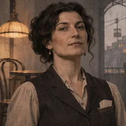
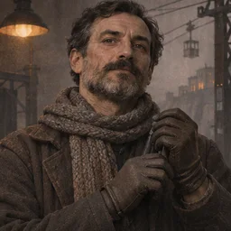
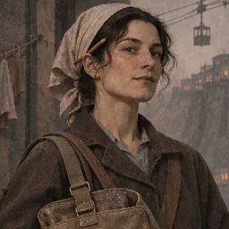
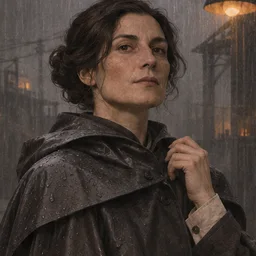
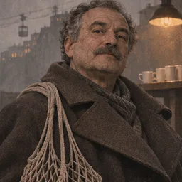
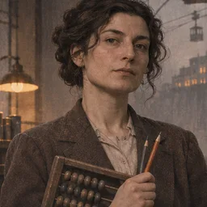
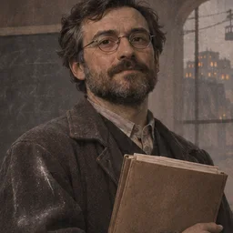

Тамара Леск
плут 3 · ОЗ 24 · КД 13 · Скорость 30 фтНочная администраторша небольшого пансиона
Тёмный жилет, аккуратные карточки в кармане, привычка сначала предлагать стул.
Вера когда-то помогла вам отстоять жильца от настойчивого нанимателя; теперь она просит найти брата.
Открыть фигурку для поля
Оружие и заклинания
Оружие · Боевой посох

Яков Рутов
воин 3 · ОЗ 31 · КД 11 · Скорость 30 фтГрузчик и бывший любительский боксёр
Рабочий шарф, подогнанные перчатки, неторопливые движения.
Матвей однажды остался с вами после закрытия зала, когда все уже ушли; вы помните внимание, а не долг.
Открыть фигурку для поля
Оружие и заклинания
Оружие · Боевой посох

Нина Чек
жрец 3 · ОЗ 24 · КД 11 · Скорость 30 фтСлужащая общественной комнаты отдыха
Светлый платок, карандаш за ухом, потёртая сумка с бытовыми принадлежностями.
Вы знаете квартал по людям, которые приходят посидеть в тишине. Исчезновение знакомого катмена тревожит их.
Открыть фигурку для поля
Оружие и заклинания
Оружие · Боевой посох
Сава Мелин
волшебник 3 · ОЗ 20 · КД 12 · Скорость 30 фтКорректор районной типографии
Короткая куртка, очки в футляре и блокнот, который закрывается перед чужим ответом.
Вера попросила вас прочесть пропавшее объявление внимательно, прежде чем квартал сочинит собственную версию.
Открыть фигурку для поля
Оружие и заклинания
Оружие · Боевой посох

Элина Грань
плут 3 · ОЗ 24 · КД 13 · Скорость 30 фтКондукторша вечернего трамвая
Водонепроницаемый плащ, чистые манжеты, внимательный взгляд.
Вы узнавали Матвея по поездкам после работы, но никогда не спрашивали, почему он всегда выходил один.
Открыть фигурку для поля
Оружие и заклинания
Оружие · Боевой посох

Глеб Острин
воин 3 · ОЗ 31 · КД 11 · Скорость 30 фтЗакупщик столовой
Широкое пальто, пустые авоськи, привычка проверять, всем ли хватило чашек.
Матвей платил за чужой чай, пока не стало понятно, что человек может хотеть не чай, а работу.
Открыть фигурку для поля
Оружие и заклинания
Оружие · Боевой посох

Дина Рат
жрец 3 · ОЗ 24 · КД 11 · Скорость 30 фтКассирша кассы взаимной помощи
Простой жакет, счётная доска, два разных карандаша для денег и обещаний.
В кассу приходят просьбы взрослых спортсменов, которым нужна первая неделя самостоятельного жилья.
Открыть фигурку для поля
Оружие и заклинания
Оружие · Боевой посох

Осип Верст
волшебник 3 · ОЗ 20 · КД 12 · Скорость 30 фтМастер курсов переобучения взрослых
Мел на рукаве, папка с чистыми листами, спокойная речь без жаргона.
Вы слышали, что Матвей интересовался вечерними занятиями; этого недостаточно, чтобы знать его намерения.
Открыть фигурку для поля
Оружие и заклинания
Оружие · Боевой посох